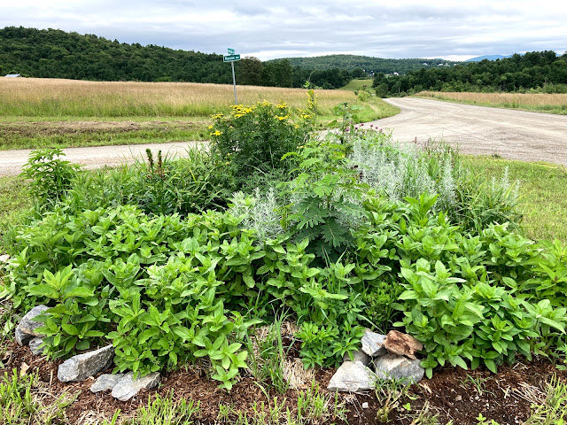
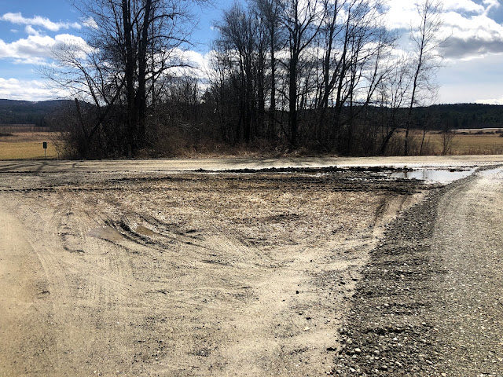

Garden Profile
The Pollinator Garden at Rotax and Roscoe

The pollinator garden at Rotax and Roscoe road in Monkton, Vermont was planted in the spring of 2020. The purpose of this garden is to support pollinators, birds, and other wildlife. Perennial plants and seeds have been selected to feed visiting swallowtails butterflies, ground bees, bumblebees, and other pollinators. The garden has tripled in size since the initial planting with neighbors adding more composted manure. Currently the garden contains a variety of native and non-native plants that attract pollinators.
In the spring of 2021, several of Vermont’s threatened and endangered species plants have been added to help the visiting public identity these important pollinator plants whose populations are dwindling. All of our threatened and endangered plants are sourced responsibly. In addition, visitors will find native plant additions and annuals that support butterflies.
For updates on this garden project and others follow me on Instagram.
Plant List
Perennials:
Butterfly Weed
Culver’s Root
Joe-Pye Weed
Obedience
Giant Purple Hyssop
Baptisia
Bee Balm
Lamb’s Ear
Tansy
Daylily
Perennial mum
Liatris
Penstemon
Cranesbill (perennial geranium)
Senna
Cardinal Flower
Annuals:
Sunflower seedlings
Zinnias
Bulbs:
Galanthus
We are thankful for our donors:
Suki Flash, compost
Christi Garrett, plant donation
Mary Lou Kete, donation of plants and labor
Red Wagon Plants, donation of plants
Morgan Vincent, Ward Preston LLC. donation of manure
Before

